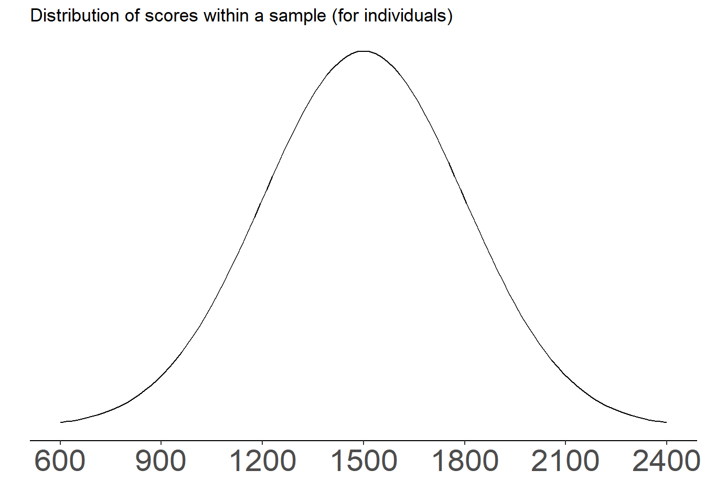

Hypothesis tests pt 2
Lecture 14
2024-06-10
General hypothesis test logic
- Would the sample fall within the distribution of the samples you would get under the null hypothesis (the null distribution)?

Z scores and percentiles
- 68% of observations are within 1 standard error/standard deviation of the mean
- 95% are within 2 standard errors/standard deviations
- 99.7% are within 3 standard errors/standard deviations

Z scores, percentiles, and p values: example
- Heights of US adults who identify as men follow a normal distribution. Mean = 70 inches; standard deviation = 3.3 inches.

Z scores: exercise Q2
What is the Z score of a man who is 65 inches tall?
- About 1.3
- About -3
- About -1.5

Percentiles: exercise Q3
If someone is in the 30th percentile in terms of height, is their height most likely:
- About 68 inches
- About 72 inches
- About 62 inches

One tailed p values

- What is the p value here?
- Is it the same as the percentile?
Different types of tests: An overview
- Which test to use is not as cut-and-dry as you might hope—there is overlap in use cases. This is my recommendation for this class.
- These terms won’t mean much to you right now. We’ll come back to the specifics.

Identifying the right test: exercise Q4
For each of these research questions, identify the explanatory variable, the response variable, their types, and the correct statistical test. Think about what the data would look like for each individual in these cases
- How does whether a student attended a public or private school affect their chances of graduating high school?
- How do outcomes of traffic stops (warnings, citations, or arrests) vary by the race of the driver?
- How does the probability a doctor refers a patient to a specialist vary by the patient’s body mass index?
- How is a country’s average life expectancy related to the amount of money per person it spends on health care?